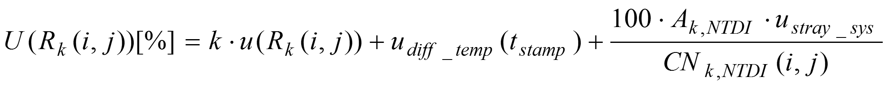
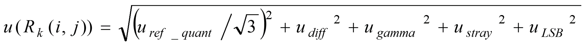
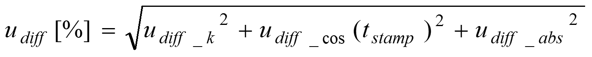
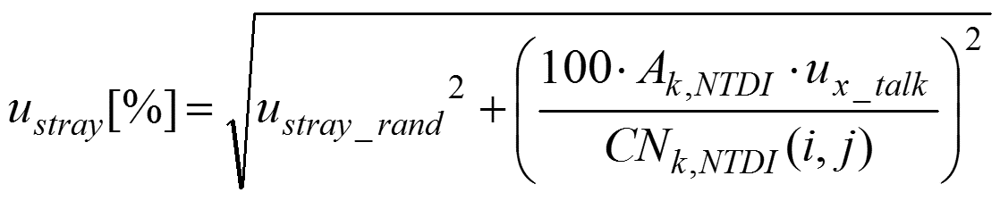
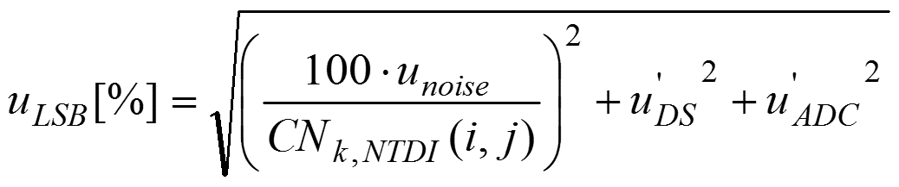
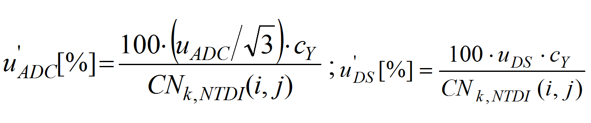

| S2-RUT Theoretical Introduction | |
NOTE: This is a short theoretical introduction in order to provide the users with the basics of the radiometric analysis and uncertainty theory behind the tool. It is foreseen in the short-term a publication with an extensive theoretical description.
The radiometric uncertainty analysis starts by identifying the different steps in the Sentinel-2 MSI instrument and L1 processing chain. The figure below displays graphically these steps. The complete Sentinel-2 L1 radiometric model can be found in [1]


The model follows the GUM [2] to combine the L1 radiometric uncertainty. The equation for the expanded uncertainty (i.e. the uncertainty at a defined coverage probability) is:

Two uncorrected systematic effects enlarge ONLY the expanded uncertainty.
No significant correlation between contributors has been identified due to the independent nature of the L1 parameters. This simplifies the combination of the standard uncertainty as shown.

The same concept can be applied to the different terms in the standard uncertainty combination model:



The GUM model relies on the assumption that a generalised central limit theorem applies to the combination model. In those circumstances, the standard uncertainty can be associated to the normal distribution and a specific coverage probability can be determined. An initial comparison to the Monte-Carlo method in [3] determined the validity of the normal distribution except at very low radiance levels (i.e. close to Lmin) levels). A more extensive validation is under study to further specify these limits.
The terms u'DS and u'ADC are further calculated as follows:

The sensitivity coefficient cy requires the use of a per-pixel relative gains coefficients. A study of its value showed that the coefficient ranges around 1 ± 10%. Thus, the impact at the expanded uncertainty can be considered negligible and the sensitivity coefficient in the RUTv1 is set to 1.